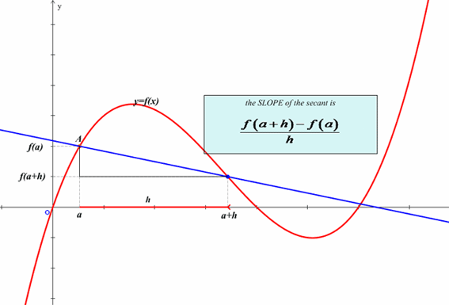
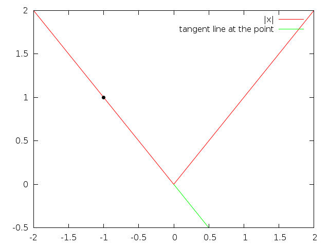
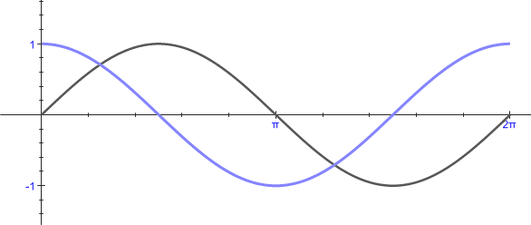

MAT100 for ELK og KOM
Uke 5
19.09.2016
Alexander Lundervold
institutt for data- og realfag
Sist uke
- Fra 1.2: Skviseteoremet
- 1.3: Grenser i det uendelige og uendelige grenser
- 1.4: Kontinuitet
- Kap. 2: Derivasjon
- Motivasjon
- Definisjon
Denne uken
Derivasjon
- 2.2: Noen viktige deriverte
- 2.3–2.4: Derivasjonsregler
- 2.5: Deriverte til trigonometriske funksjoner
- 2.6: Høyere-ordens deriverte
- 2.7: Differensialer
Derivasjon
Stigning til tangent:
Derivasjon
Funksjonen $y = |x|$ er ikke deriverbar i $x=0$:
Derivasjon
Den deriverte $f'(a)$ kan tenkes på som:
- Grensen \[\lim_{h\rightarrow 0} \frac{f(a+h) - f(a)}{h}\]
- Den momentane endringsraten til $f$ i $x=a$
- Stigning til tangenten til $y=f(x)$ i $x=a$
- Stigningstallet til $y=f(x)$ i $x=a$
At f.eks. $f(x) = x^2$ er deriverbar i $x=3$ betyr at grensen
\[\lim_{h\rightarrow 3} \frac{(3+h)^2 - 3^2}{h}\]eksisterer.
Den deriverte til $x^2$ i $x=3$ er
Dersom $f(t)$ angir posisjonen til et objekt, målt i antall meter fra start ved tiden $t$ sekunder, hva er farten etter 50 sek?
Enkelt! Den er $f'(50)$ meter per sekund.
Stigning til tangent:
$$
\begin{align*}
& \underline{\mbox{Konstant: }} \\&\quad (cf)'(x) = cf'(x)\\
& \underline{\mbox{Sum: }} \\&\quad(f \pm g)'(x) = f'(x) \pm g'(x)\\
& \underline{\mbox{Potens: }} \\&\quad\mbox{La} \,\, f(x)=x^n.\, \mbox{Da er } f'(x) = nx^{n-1}\\
& \underline{\mbox{Produkt: }} \\&\quad(fg)'(x) = f'(x)g(x) + f(x)g'(x)\\
& \underline{\mbox{Kvotient: }} \\&\quad(f/g)'(x) = \frac{f'(x)g(x) - f(x)g'(x)}{g(x)^2}\\
& \underline{\mbox{Kjerneregel: }} \\&\quad(f \circ g)'(x) = f'(g(x)) g'(x)
\end{align*}
$$

Deriverte av sinus og cosinus
